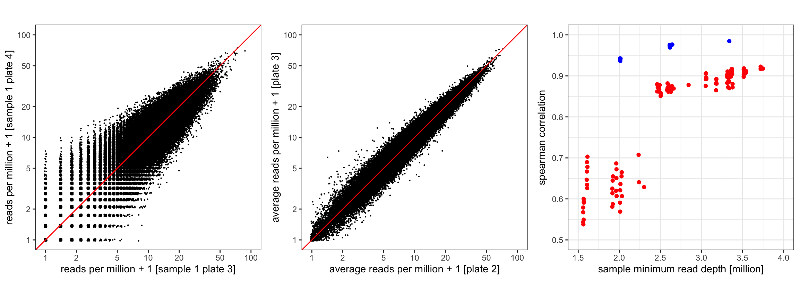
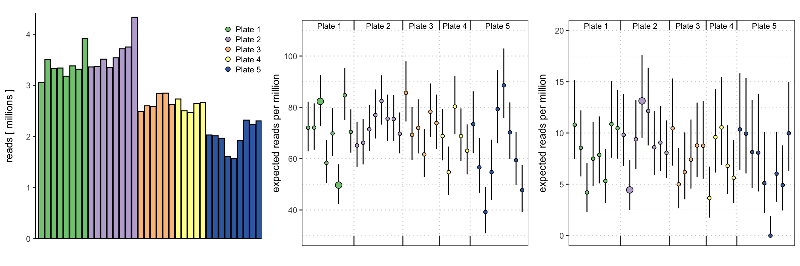
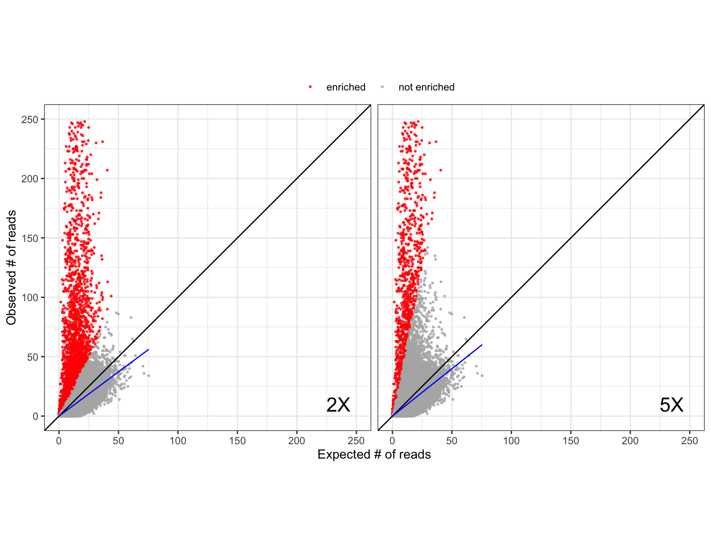

Last updated: 2022-01-23
Checks: 7 0
Knit directory: beer_manuscript/
This reproducible R Markdown analysis was created with workflowr (version 1.7.0). The Checks tab describes the reproducibility checks that were applied when the results were created. The Past versions tab lists the development history.
Great! Since the R Markdown file has been committed to the Git repository, you know the exact version of the code that produced these results.
Great job! The global environment was empty. Objects defined in the global environment can affect the analysis in your R Markdown file in unknown ways. For reproduciblity it’s best to always run the code in an empty environment.
The command set.seed(20210907) was run prior to running the code in the R Markdown file. Setting a seed ensures that any results that rely on randomness, e.g. subsampling or permutations, are reproducible.
Great job! Recording the operating system, R version, and package versions is critical for reproducibility.
Nice! There were no cached chunks for this analysis, so you can be confident that you successfully produced the results during this run.
Great job! Using relative paths to the files within your workflowr project makes it easier to run your code on other machines.
Great! You are using Git for version control. Tracking code development and connecting the code version to the results is critical for reproducibility.
The results in this page were generated with repository version 924ae62. See the Past versions tab to see a history of the changes made to the R Markdown and HTML files.
Note that you need to be careful to ensure that all relevant files for the analysis have been committed to Git prior to generating the results (you can use wflow_publish or wflow_git_commit). workflowr only checks the R Markdown file, but you know if there are other scripts or data files that it depends on. Below is the status of the Git repository when the results were generated:
Ignored files:
Ignored: .DS_Store
Ignored: .Rhistory
Ignored: .Rproj.user/
Ignored: analysis/.DS_Store
Ignored: analysis/partials/.DS_Store
Ignored: data_processed/.DS_Store
Ignored: data_processed/simulation_2beads_mle/.DS_Store
Ignored: data_processed/simulation_2beads_mom/.DS_Store
Ignored: data_processed/simulation_2beads_truth/.DS_Store
Ignored: data_processed/simulation_4beads_edgeR/.DS_Store
Ignored: data_processed/simulation_curves.rda
Ignored: data_raw/.DS_Store
Ignored: figures/.DS_Store
Note that any generated files, e.g. HTML, png, CSS, etc., are not included in this status report because it is ok for generated content to have uncommitted changes.
These are the previous versions of the repository in which changes were made to the R Markdown (analysis/hiv_discussion.Rmd) and HTML (docs/hiv_discussion.html) files. If you’ve configured a remote Git repository (see ?wflow_git_remote), click on the hyperlinks in the table below to view the files as they were in that past version.
| File | Version | Author | Date | Message |
|---|---|---|---|---|
| html | d8b023f | Athena Chen | 2022-01-18 | Build site. |
| html | 75f2a6d | Athena Chen | 2022-01-18 | Build site. |
| Rmd | 9d7b43a | Athena Chen | 2022-01-18 | Updated repo to use most up-to-date figures and code |
This data was used to highlight strong peptide-dependent binding in the Discussion and had been previously analyzed to characterize antibody responses and their evolution during the course of HIV infection (Eshleman et. al 2019) and to generate a classifier for recent HIV infection (Chen et. al 2021).
#' Code to load required packages to reproduce the results and figures in
#' the manuscript.
required_packages <- c('plyr', 'tidyverse', 'here', 'ggpubr', 'gridExtra',
'latex2exp', 'kableExtra', 'RColorBrewer', 'BiocManager')
for (pkg in required_packages) {
if (!(pkg %in% rownames(installed.packages()))) {
install.packages(pkg)
}
library(pkg, character.only = TRUE)
}
bioc_packages <- c("beer")
for(pkg in bioc_packages){
if(!(pkg %in% rownames(installed.packages()))) {
BiocManager::install(pkg)
}
library(pkg, character.only = TRUE)
}
rm(list = c("required_packages", "bioc_packages", "pkg"))
#' Define global variables for plotting
hot_cold_cols <- c("navy", "blue", "deepskyblue", "cyan", "lightcyan",
"yellow", "orange", "red")#' helper_functions.R
#'
#' functions used to help process and analyze output from BEER simulations
#' integrate_vector()
#'
#' Function to perform trapezoidal approximation given two vectors.
#'
#' @param x numeric vector of x values
#' @param y numeric vector with the same length as x
#'
#' @return numeric value of the trapezoidal approximation
integrate_vector <- function(x, y){
if (length(y) != length(x)) {
stop("The length of the vectors must be equal.")
}
n_points <- length(y)
sorted_ind <- sort(x, index.return = TRUE)$ix
sorted_x <- x[sorted_ind]
sorted_y <- y[sorted_ind]
# trapezoidal rule
sum(0.5 * (sorted_y[-1] + sorted_y[-n_points]) *
(sorted_x[-1] - sorted_x[-n_points]))
}
#' get_roc()
#'
#' Function to calculate the ppv, sens, and spec for various
#' cutoffs between 0 and 1.
#'
#' @param data data frame with columns `prop_enriched` for the threshold and
#' `Z` for the true enrichment status, and optional column `extra_info`
#' @param min_cutoff minimum cutoff, default to 0
#' @param max_cutoff maximum cutoff, default ot 1 - 1e-6
#' @param extra_info boolean indicating whether extra information should be used
#' in the classification at each cutoff. If `TRUE`, then the column `extra_info`
#' must be present in the data frame.
#'
#' @return data fram with columns `cutoff`, `ppv`, `sens`, and `spec`.
get_roc <- function(data, min_cutoff = 0, max_cutoff = 1 - 1e-6,
extra_info = FALSE){
cutoffs <- seq(min_cutoff, max_cutoff, length.out = 1000)
# Calculate ppv, sens, spec for each cutoff
ppv <- sapply(cutoffs, function(x) {
if(extra_info){
predict <- (data$prop_enriched >= x & data$extra_info)
} else {
predict <- (data$prop_enriched >= x)
}
sum((data$Z == 1) & predict)/sum(predict)
})
spec <- sapply(cutoffs, function(x){
if(extra_info){
predict <- (data$prop_enriched >= x & data$extra_info)
} else {
predict <- (data$prop_enriched >= x)
}
sum((data$Z == 0) & !predict)/sum(data$Z == 0)
})
sens <- sapply(cutoffs, function(x){
if(extra_info){
predict <- (data$prop_enriched >= x & data$extra_info)
} else {
predict <- (data$prop_enriched >= x)
}
sum((data$Z == 1) & predict)/sum(data$Z == 1)
})
# Get AUC for ROC
npoints <- length(sens)
area_roc <- integrate_vector(1-spec, sens)
return(cutoffs = data.frame(cutoff = cutoffs,
ppv = ppv,
sens = sens,
spec = spec,
area_roc = area_roc))
}
#' get_legend()
#'
#' Function given [here](https://stackoverflow.com/questions/12539348/ggplot-separate-legend-and-plot)
#' to extract the legend for plotting purposes.
#'
#' @param plot ggplot
#' @return ggplot legend
get_legend <- function(myggplot){
tmp <- ggplot_gtable(ggplot_build(myggplot))
leg <- which(sapply(tmp$grobs, function(x) x$name) == "guide-box")
legend <- tmp$grobs[[leg]]
return(legend)
}
#' mysqrt_trans()
#'
#' Function given [here](https://stackoverflow.com/questions/47944992/ggplot2-removes-zero-when-using-scale-x-sqrt)
#' to add zero to the plot after sqrt transforming the x-axis
#'
#' @param plot ggplot
#' @return ggplot legend
mysqrt_trans <- function() {
scales::trans_new("mysqrt",
transform = base::sqrt,
inverse = function(x) ifelse(x<0, 0, x^2),
domain = c(0, Inf))
}
#' penriched_fit()
#'
#' Function that returns a data frame with the point estimate, and 95\%
#' confidence intervals.
#'
#' @param model logistic regression model
#' @param covariates data frame of covariates
#' @return data frame with columns for the covariate, point estimate, lower CI
#' and upper CI.
penriched_fit <- function(model, covariates){
# Predict based on the model
prediction <- predict(model, covariates, type = "link", se.fit = TRUE)
pred_lower <- prediction$fit - 1.96*prediction$se.fit
pred_upper <- prediction$fit + 1.96*prediction$se.fit
# Transform logit to probabilities
ppred <- 1/(1 + exp(-prediction$fit))
plower <- 1/(1 + exp(-pred_lower))
pupper <- 1/(1 + exp(-pred_upper))
# Return covariates with prediction + 95 CI added
bind_cols(covariates,
data.frame(predict_p = ppred,
lower_ci = plower,
upper_ci = pupper))
}hiv_virscan <- readRDS(here::here("data_raw", "hiv_virscan.rds"))
hiv_beads <- hiv_virscan[, hiv_virscan$group == "beads"]Evidence for a strong peptide effect in PhIP-Seq data, demonstrated using data from five plates of a previous experiment using HIV samples, analyzed in Eshleman et. al 2019 and Chen et. al 2021. Left: observed read counts per million reads for 95,242 peptides from two “beads only” samples from different plates. For these two samples, the Spearman correlation is 0.875. Middle: observed average read counts per million reads for 95,242 peptides from all “beads only” samples from two different plates. For these two plates, the Spearman correlation is 0.975. Right: within and between plate sample correlations as a function of sequencing depth. For each pair of bead only samples from the same plate (red dots, 117 pairs total), the Spearman correlation (y-axis) is related to the minimum of the respective two sequencing depths (x-axis). For each pair of plates (blue dots, 10 pairs total), the Spearman correlation between the average read counts of the bead only samples (y-axis) is also related to the minimum of the two median sequencing depths (x-axis), and substantially higher than the correlations of the bead only samples.
## Left panel: peptide effect in beads-only samples
cpm <- propReads(hiv_beads)*1e6
set.seed(1)
breaks <- c(1, 2, 5, 10, 20, 50, 100)
plot_pepeff <- data.frame(beads_s1p3 = cpm[, "beads_3_C9"],
beads_s1p4 = cpm[, "beads_4_A5"]) %>%
ggplot(aes(x = log10(beads_s1p3 + 1),
y = log10(beads_s1p4 + 1))) +
geom_jitter(width = 0.01, height = 0.01, size = 0.1) +
geom_abline(aes(slope = 1, intercept = 0), color = "red") +
scale_x_continuous(breaks = log10(breaks),
labels = breaks) +
scale_y_continuous(breaks = log10(breaks),
labels = breaks) +
coord_fixed(xlim = c(0, log10(100)), ylim = c(0, log10(100))) +
labs(x = "reads per million + 1 [sample 1 plate 3]",
y = "reads per million + 1 [sample 1 plate 4]") +
theme_bw() +
theme(panel.grid = element_blank(),
aspect.ratio = 1)
# # Spearman correlation
# cor(cpm[, "beads_3_C9"], cpm[, "beads_4_A5"],
# method = "spearman")
## Middle panel: average cpm
avg_cpm <- vapply(paste0("plate", 1:5), function(plate){
plate_num <- str_match(plate, "plate([0-9])")[, 2]
rowMeans(cpm[, grepl(paste0("beads_", plate_num), colnames(cpm))])
}, numeric(nrow(cpm)))
plot_avgcpm <- avg_cpm %>%
as_tibble() %>%
ggplot(aes(x = log10(plate2 + 1), y = log10(plate3 + 1))) +
geom_jitter(width = 0.01, height = 0.01, size = 0.1) +
geom_abline(aes(slope = 1, intercept = 0), color = "red") +
scale_x_continuous(breaks = log10(breaks),
labels = breaks) +
scale_y_continuous(breaks = log10(breaks),
labels = breaks) +
coord_fixed(xlim = c(0, log10(100)), ylim = c(0, log10(100))) +
labs(x = "average reads per million + 1 [plate 2]",
y = "average reads per million + 1 [plate 3]") +
theme_bw() +
theme(panel.grid = element_blank(),
aspect.ratio = 1)
# # Spearman correlation
# cor(avg_cpm[, "plate2"], avg_cpm[, "plate3"], method = "spearman")
## Right panel: correlation by read depth
# correlations between samples within plates
within_pl <- cor(cpm, method = "spearman")
within_pl[lower.tri(within_pl, diag = TRUE)] <- NA
within_df <- within_pl %>%
as_tibble(rownames = "sample_1") %>%
pivot_longer(cols = -sample_1,
names_to = "sample_2",
values_to = "corr") %>%
mutate(pl_1 = str_match(sample_1, "beads_([0-9])")[, 2],
pl_2 = str_match(sample_2, "beads_([0-9])")[, 2]) %>%
left_join(data.frame(sample_id = colnames(hiv_beads),
rd_1 = librarySize(hiv_beads)),
by = c("sample_1"= "sample_id")) %>%
left_join(data.frame(sample_id = colnames(hiv_beads),
rd_2 = librarySize(hiv_beads)),
by = c("sample_2"= "sample_id")) %>%
filter(!is.na(corr) & pl_1 == pl_2) %>%
rowwise() %>%
mutate(min_rd = min(rd_1, rd_2)) %>%
ungroup()
# correlations between plate averages
med_rd <- vapply(paste0("plate", 1:5), function(plate){
plate_num <- str_match(plate, "plate([0-9])")[, 2]
median(librarySize(hiv_beads)[grepl(paste0("beads_", plate_num), colnames(cpm))])
}, numeric(1))
between_pl <- cor(avg_cpm, method = "spearman")
between_pl[lower.tri(between_pl, diag = TRUE)] <- NA
between_df <- between_pl %>%
as_tibble(rownames = "plate_1") %>%
pivot_longer(cols = -plate_1,
names_to = "plate_2",
values_to = "corr") %>%
left_join(data.frame(plate = names(med_rd),
med_rd_1 = med_rd),
by = c("plate_1"= "plate")) %>%
left_join(data.frame(plate = names(med_rd),
med_rd_2 = med_rd),
by = c("plate_2"= "plate")) %>%
filter(!is.na(corr)) %>%
rowwise() %>%
mutate(med_rd = min(med_rd_1, med_rd_2)) %>%
ungroup()
plot_corr <- ggplot() +
geom_jitter(aes(x = min_rd/1e6, y = corr),
data = within_df, width = 0.005, color = "red") +
geom_jitter(aes(x = med_rd/1e6, y = corr),
data = between_df, width = 0.005, color = "blue") +
scale_x_continuous(breaks = seq(1.5, 4.0, by = 0.5)) +
scale_y_continuous(breaks = seq(0.5, 1.0, by = 0.1)) +
coord_cartesian(xlim = c(1.5, 4.0), ylim = c(0.5, 1.0)) +
labs(x = "sample minimum read depth [million]",
y = "spearman correlation") +
theme_bw() +
theme(aspect.ratio = 1)
ggarrange(plot_pepeff, plot_avgcpm, plot_corr, ncol = 3,
align = "v") 
| Version | Author | Date |
|---|---|---|
| 75f2a6d | Athena Chen | 2022-01-18 |
Evidence for larger than binomial variability in the PhIP-Seq data analyzed in Eshleman et. al 2019 and Chen et. al 2021. Left: library size (reads in millions) for 36 control (“bead only”) samples from 5 plates. Middle: expected read counts per million reads aligned based on the estimated Binomial probabilities (dots, colored by plate) and respective 95% confidence intervals for a peptide with large expected read counts, for each of the control samples. Highlighted are samples 3 and 6 from plate 1, showing large discrepancies between the Binomial probabilities for this peptide between the two bead only samples. Right: the same statistics as in the middle panel, for a peptide with smaller expected read counts. Highlighted are samples 10 and 12 from plate 2, again showing a large discrepancy between the Binomial probabilities for this peptide between the two bead only samples.
# Plot library size
lib_size <- data.frame(libsize = librarySize(hiv_beads)) %>%
rownames_to_column("sample") %>%
mutate(plate = str_match(sample, "beads_([0-9])_")[, 2],
plate = factor(plate, levels = 1:5)) %>%
arrange(plate, sample) %>%
ggplot(aes(x = sample, y = libsize, fill = plate)) +
geom_bar(stat = "identity", color = "black", show.legend = FALSE) +
geom_point(shape = 21, size = 2, color = "black",
data = data.frame(sample = colnames(hiv_beads),
plate = factor(hiv_beads$plate, levels = 1:5),
libsize = rep(NA_integer_, ncol(hiv_beads)))) +
scale_fill_manual(values = brewer.pal(5,"Accent"),
labels = paste("Plate", 1:5)) +
scale_y_continuous(breaks = (0:4)*1e6,
labels = 0:4,
expand = expansion(mult = c(0, 0.02))) +
scale_x_discrete(labels = NULL,
expand = expansion(add = c(1, 0))) +
labs(y = "reads [ millions ]",
x = "") +
guides(fill = guide_legend(keywidth = 0.1, keyheight = 0.75)) +
theme_classic() +
theme(aspect.ratio = 1,
axis.ticks.x = element_blank(),
panel.grid = element_blank(),
legend.title = element_blank(),
legend.position = c(0.92, 0.85))
# Plot variability for a peptide with large expected read counts
pep_large <- "pep_10160"
binom_large <- data.frame(counts = as.vector(counts(hiv_beads[pep_large, ])),
n = librarySize(hiv_beads)) %>%
rownames_to_column("sample_id") %>%
rowwise() %>%
mutate(cpm = counts/n*1e6,
cpm_025 = binom.test(counts, n)$conf.int[1]*1e6,
cpm_975 = binom.test(counts, n)$conf.int[2]*1e6) %>%
ungroup() %>%
mutate(plate = str_match(sample_id, "beads_([0-9])")[, 2],
plate = factor(plate, levels = 1:5),
size = ifelse(sample_id %in% c("beads_1_D12", "beads_1_E8"), 2, 1)) %>%
mutate(sample_id = factor(sample_id)) %>%
ggplot(aes(x = as.numeric(sample_id))) +
geom_linerange(aes(ymin = cpm_025, ymax = cpm_975)) +
geom_point(aes(y = cpm, size = size, fill = plate), shape = 21) +
scale_fill_manual(values = brewer.pal(5,"Accent"),
labels = paste("Plate", 1:5)) +
scale_y_continuous(breaks = c(40, 60, 80, 100),
limits = c(30, 110)) +
scale_x_continuous(labels = NULL,
breaks = cumsum(table(hiv_beads$plate)[-5]) + 0.5,
sec.axis = dup_axis(),
expand = expansion(add = c(1, 1))) +
geom_text(aes(x = xpos, y = ypos, label = label),
hjust = 0.5, nudge_x = 0.5, vjust = -0.3, size = 3,
data = data.frame(xpos = c(4, 12, 19, 24.5, 31.5),
ypos = rep(110, 5),
label = paste("Plate", 1:5))) +
coord_cartesian(ylim = c(30, 110)) +
scale_size(breaks = c(1, 2),
range = c(1.5, 3)) +
labs(y = "expected reads per million",
x = "") +
theme_bw() +
theme(
aspect.ratio = 1,
panel.grid.major = element_line(linetype = "dotted", color = "lightgrey"),
panel.grid.minor.y = element_line(linetype = "dotted", color = "lightgrey"),
panel.grid.minor.x = element_blank(),
axis.ticks.length.x = unit(-11, "pt"),
legend.position = "none",
plot.margin = margin(0, 0, 0, 0)
)
# Plot variability for a peptide with smaller expected read counts
pep_small <- "pep_58858"
binom_small <- data.frame(counts = as.vector(counts(hiv_beads[pep_small, ])),
n = librarySize(hiv_beads)) %>%
rownames_to_column("sample_id") %>%
rowwise() %>%
mutate(cpm = counts/n*1e6,
cpm_025 = binom.test(counts, n)$conf.int[1]*1e6,
cpm_975 = binom.test(counts, n)$conf.int[2]*1e6) %>%
ungroup() %>%
mutate(plate = str_match(sample_id, "beads_([0-9])")[, 2],
plate = factor(plate, levels = 1:5),
size = ifelse(sample_id %in% c("beads_2_B5", "beads_2_D5"), 2, 1)) %>%
mutate(sample_id = factor(sample_id)) %>%
ggplot(aes(x = as.numeric(sample_id))) +
geom_linerange(aes(ymin = cpm_025, ymax = cpm_975)) +
geom_point(aes(y = cpm, size = size, fill = plate), shape = 21) +
scale_fill_manual(values = brewer.pal(5,"Accent"),
labels = paste("Plate", 1:5)) +
scale_y_continuous(breaks = seq(0, 20, 5),
limits = c(0, 20)) +
scale_x_continuous(labels = NULL,
breaks = cumsum(table(hiv_beads$plate)[-5]) + 0.5,
sec.axis = dup_axis(),
expand = expansion(add = c(1, 1))) +
geom_text(aes(x = xpos, y = ypos, label = label),
hjust = 0.5, nudge_x = 0.5, vjust = -0.3, size = 3,
data = data.frame(xpos = c(4, 12, 19, 24.5, 31.5),
ypos = rep(20, 5),
label = paste("Plate", 1:5))) +
coord_cartesian(ylim = c(0, 20)) +
scale_size(breaks = c(1, 2),
range = c(1.5, 3)) +
labs(y = "expected reads per million",
x = "") +
theme_bw() +
theme(
aspect.ratio = 1,
panel.grid.major = element_line(linetype = "dotted", color = "lightgrey"),
panel.grid.minor.y = element_line(linetype = "dotted", color = "lightgrey"),
panel.grid.minor.x = element_blank(),
axis.ticks.length.x = unit(-11, "pt"),
legend.position = "none",
plot.margin = margin(0, 0, 0, 0)
)
ggarrange(lib_size, binom_large, binom_small, nrow = 1,
align = "v")Warning: Removed 36 rows containing missing values (geom_point).
| Version | Author | Date |
|---|---|---|
| 75f2a6d | Athena Chen | 2022-01-18 |
Expected versus observed read counts for 95,242 peptides from a randomly selected serum sample. Expected read counts for each peptide were derived using maximum likelihood estimates from the negative controls on the same plate. Each point represents one peptide from one sample, and peptides were considered enriched (red) if the observed read count was over 2 times (left) and 5 times (right) the expected number of reads. Linear regression lines (blue) were fitted using the non-enriched peptides and compared to the line where observed and expected reads are equal (black). The observed counts were truncated at 250 observed reads to enhance the display.
# Convert to tidy format at add expected prop/counts
hiv_tidy <- as(hiv_virscan[, hiv_virscan$plate == 3], "DataFrame") %>%
as_tibble() %>%
group_by(sample) %>%
mutate(n = sum(counts)) %>%
ungroup() %>%
select(sample, group, n, peptide, counts) %>%
mutate(prop_reads = counts/n) %>%
group_by(peptide) %>%
mutate(expected_prop = mean(prop_reads[group == "beads"]),
expected_rc = expected_prop*n,
hit_2x = ifelse(counts > 2*expected_rc, TRUE, FALSE),
hit_5x = ifelse(counts > 5*expected_rc, TRUE, FALSE)) %>%
ungroup()
## Identify one random sample on plate 3 for visualization purposes
set.seed(123)
sample_id <- sample(colnames(hiv_virscan[, hiv_virscan$group != "beads" & hiv_virscan$plate == 3]), 1)
# Figure S15: attnconstant.png ----------
hiv_tidy %>%
filter(counts <= 250 & expected_rc <= 250 & sample == sample_id) %>%
pivot_longer(cols = contains("hit_"),
names_to = "threshold",
values_to = "hit",
names_pattern = "hit_([0-9])x") %>%
ggplot(aes(x = expected_rc, y = counts, group = threshold)) +
facet_wrap(.~threshold) +
geom_point(aes(color = hit), size = 0.5, alpha = 0.75) +
geom_abline(aes(intercept = 0, slope = 1), color = "black", size = 0.5) +
geom_smooth(formula = y ~ x - 1,
data = hiv_tidy %>%
filter(sample == sample_id) %>%
pivot_longer(cols = contains("hit_"),
names_to = "threshold",
values_to = "hit",
names_pattern = "hit_([0-9])x") %>%
filter(!hit),
color = "blue", method = "lm", size = 0.5) +
geom_text(aes(label = label),
x = 235, y = 10, size = 6,
#x = 57.75, y = 244, size = 5,
data = data.frame(threshold = c("2", "5"),
label = c("2X", "5X"))) +
labs(x = "Expected # of reads",
y = "Observed # of reads",
color = "") +
scale_color_manual(breaks = c("TRUE", "FALSE"),
values = c("red", "grey70"),
labels = c("enriched", "not enriched")) +
coord_cartesian(xlim = c(0, 250), ylim = c(0, 250)) +
theme_bw() +
theme(aspect.ratio = 1,
strip.background = element_blank(),
strip.text = element_blank(),
legend.position = "top",
legend.box.margin=margin(-10,-10,-10,-10))
| Version | Author | Date |
|---|---|---|
| 75f2a6d | Athena Chen | 2022-01-18 |
sessionInfo()R version 4.1.2 (2021-11-01)
Platform: x86_64-apple-darwin17.0 (64-bit)
Running under: macOS Big Sur 10.16
Matrix products: default
BLAS: /Library/Frameworks/R.framework/Versions/4.1/Resources/lib/libRblas.0.dylib
LAPACK: /Library/Frameworks/R.framework/Versions/4.1/Resources/lib/libRlapack.dylib
locale:
[1] en_US.UTF-8/en_US.UTF-8/en_US.UTF-8/C/en_US.UTF-8/en_US.UTF-8
attached base packages:
[1] stats4 stats graphics grDevices utils datasets methods
[8] base
other attached packages:
[1] beer_0.99.0 rjags_4-12
[3] coda_0.19-4 PhIPData_1.2.0
[5] SummarizedExperiment_1.24.0 Biobase_2.54.0
[7] GenomicRanges_1.46.1 GenomeInfoDb_1.30.0
[9] IRanges_2.28.0 S4Vectors_0.32.3
[11] BiocGenerics_0.40.0 MatrixGenerics_1.6.0
[13] matrixStats_0.61.0 BiocManager_1.30.16
[15] RColorBrewer_1.1-2 kableExtra_1.3.4
[17] latex2exp_0.5.0 gridExtra_2.3
[19] ggpubr_0.4.0 here_1.0.1
[21] forcats_0.5.1 stringr_1.4.0
[23] dplyr_1.0.7 purrr_0.3.4
[25] readr_2.1.1 tidyr_1.1.4
[27] tibble_3.1.6 ggplot2_3.3.5
[29] tidyverse_1.3.1 plyr_1.8.6
[31] workflowr_1.7.0
loaded via a namespace (and not attached):
[1] colorspace_2.0-2 ggsignif_0.6.3 ellipsis_0.3.2
[4] rprojroot_2.0.2 XVector_0.34.0 fs_1.5.2
[7] rstudioapi_0.13 farver_2.1.0 listenv_0.8.0
[10] fansi_1.0.2 lubridate_1.8.0 xml2_1.3.3
[13] splines_4.1.2 codetools_0.2-18 knitr_1.37
[16] jsonlite_1.7.3 broom_0.7.11 dbplyr_2.1.1
[19] compiler_4.1.2 httr_1.4.2 backports_1.4.1
[22] assertthat_0.2.1 Matrix_1.4-0 fastmap_1.1.0
[25] limma_3.50.0 cli_3.1.1 later_1.3.0
[28] htmltools_0.5.2 tools_4.1.2 gtable_0.3.0
[31] glue_1.6.0 GenomeInfoDbData_1.2.7 Rcpp_1.0.8
[34] carData_3.0-5 cellranger_1.1.0 jquerylib_0.1.4
[37] vctrs_0.3.8 nlme_3.1-155 svglite_2.0.0
[40] progressr_0.10.0 xfun_0.29 globals_0.14.0
[43] ps_1.6.0 rvest_1.0.2 lifecycle_1.0.1
[46] rstatix_0.7.0 future_1.23.0 edgeR_3.36.0
[49] getPass_0.2-2 zlibbioc_1.40.0 scales_1.1.1
[52] hms_1.1.1 promises_1.2.0.1 parallel_4.1.2
[55] yaml_2.2.1 stringi_1.7.6 highr_0.9
[58] rlang_0.4.12 pkgconfig_2.0.3 systemfonts_1.0.3
[61] bitops_1.0-7 evaluate_0.14 lattice_0.20-45
[64] labeling_0.4.2 cowplot_1.1.1 processx_3.5.2
[67] tidyselect_1.1.1 parallelly_1.30.0 magrittr_2.0.1
[70] R6_2.5.1 generics_0.1.1 DelayedArray_0.20.0
[73] DBI_1.1.2 mgcv_1.8-38 pillar_1.6.4
[76] haven_2.4.3 whisker_0.4 withr_2.4.3
[79] abind_1.4-5 RCurl_1.98-1.5 future.apply_1.8.1
[82] modelr_0.1.8 crayon_1.4.2 car_3.0-12
[85] utf8_1.2.2 tzdb_0.2.0 rmarkdown_2.11
[88] locfit_1.5-9.4 grid_4.1.2 readxl_1.3.1
[91] callr_3.7.0 git2r_0.29.0 reprex_2.0.1
[94] digest_0.6.29 webshot_0.5.2 httpuv_1.6.5
[97] munsell_0.5.0 viridisLite_0.4.0